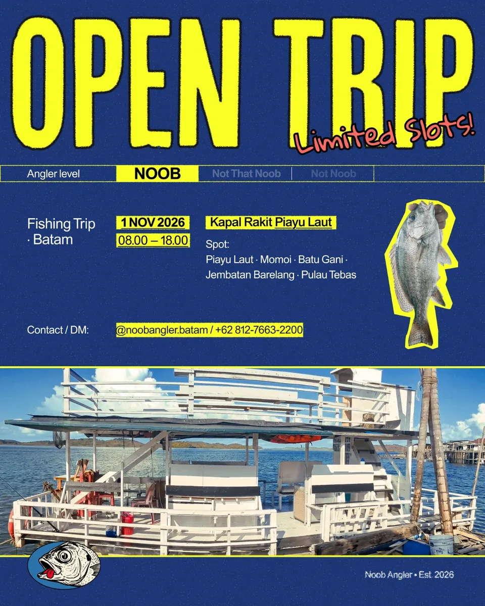

RAMAH PEMULAKHUSUS LAKI-LAKI · TRIP INI
MINGGU, 1 NOVEMBER 2026
Seharian di laut.
Cerita sampai darat.
Open trip kapal rakit · Piayu Laut → area Barelang
- Jadwal
- 08.00–18.00 WIB
- Berangkat dari
- Piayu Laut, Batam
- Umpan termasuk
- Hidup, total 3 kg bersama
- Pengalaman
- Noob juga boleh
HARGA PUBLIKRp170.000 / orang
Ketersediaan kursi, fasilitas, dan ketentuan keberangkatan dikonfirmasi admin. Tidak ada pembayaran di website ini.